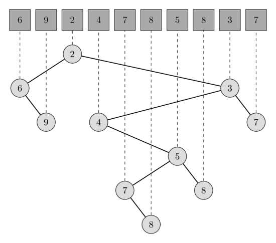
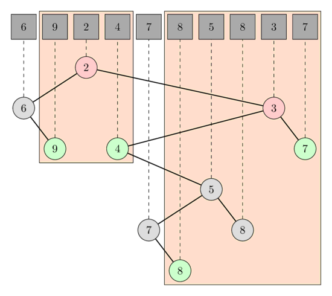

Giải quyết RMQ (Range Minimum Query) bằng cách tìm LCA (Lowest Common Ancestor)¶
Cho một mảng A[0..N-1].
Với mỗi truy vấn có dạng [L, R], chúng ta muốn tìm giá trị nhỏ nhất trong mảng A từ vị trí L đến vị trí R.
Chúng ta giả định rằng mảng A không thay đổi trong suốt quá trình thực hiện, nghĩa là bài viết này mô tả giải pháp cho bài toán RMQ tĩnh.
Dưới đây mô tả một giải pháp tối ưu tiệm cận. Giải pháp này nổi bật so với các cách giải RMQ khác bởi vì nó rất khác biệt: nó quy giản bài toán RMQ về bài toán LCA, rồi sử dụng Thuật toán Farach-Colton và Bender - thuật toán lại quy giản ngược bài toán LCA về một bài toán RMQ đặc biệt và giải quyết nó.
Thuật toán¶
Chúng ta xây dựng một cây Cartesian (Cartesian tree) từ mảng A.
Cây Cartesian của mảng A là một cây nhị phân có tính chất của min-heap (giá trị của nút cha phải nhỏ hơn hoặc bằng giá trị của các nút con) sao cho phép duyệt trung thứ tự (in-order traversal) sẽ ghé thăm các nút theo đúng thứ tự xuất hiện của chúng trong mảng A.
Nói cách khác, cây Cartesian là một cấu trúc dữ liệu đệ quy.
Mảng A được chia làm 3 phần: phần tiền tố của mảng nằm trước phần tử nhỏ nhất, bản thân phần tử nhỏ nhất, và phần hậu tố còn lại.
Nút gốc của cây sẽ là nút tương ứng với phần tử nhỏ nhất của mảng A, cây con bên trái sẽ là cây Cartesian của phần tiền tố, và cây con bên phải sẽ là cây Cartesian của phần hậu tố.
Trong hình dưới đây, bạn có thể thấy một mảng độ dài 10 và cây Cartesian tương ứng.

Truy vấn giá trị nhỏ nhất trên đoạn [l, r] tương đương với truy vấn tổ tiên chung gần nhất (LCA) của [l', r'], trong đó l' là nút tương ứng với phần tử A[l] và r' là nút tương ứng với phần tử A[r].
Thật vậy, nút tương ứng với phần tử nhỏ nhất trong đoạn phải là tổ tiên của tất cả các nút trong đoạn đó, do đó cũng là tổ tiên của cả l' và r'.
Điều này tự động suy ra từ tính chất của min-heap.
Và nó cũng phải là tổ tiên chung gần nhất (thấp nhất), vì nếu ngược lại thì cả l' và r' sẽ đều nằm cùng một phía cây con bên trái hoặc cây con bên phải, điều này tạo ra mâu thuẫn vì khi đó giá trị nhỏ nhất thực tế lại không nằm trong đoạn truy vấn.
Trong hình dưới đây, bạn có thể thấy các truy vấn LCA tương ứng với các truy vấn RMQ [1, 3] và [5, 9].
Trong truy vấn đầu tiên, LCA của các nút A[1] và A[3] là nút tương ứng với A[2] có giá trị là 2, và trong truy vấn thứ hai, LCA của A[5] và A[9] là nút tương ứng với A[8] có giá trị là 3.

Cây này có thể được xây dựng trong thời gian $O(N)$ và thuật toán Farach-Colton và Bender có thể tiền xử lý cây trong $O(N)$ để trả lời truy vấn LCA trong $O(1)$.
Xây dựng cây Cartesian¶
Chúng ta sẽ xây dựng cây Cartesian bằng cách thêm lần lượt từng phần tử một.
Tại mỗi bước, chúng ta luôn duy trì một cây Cartesian hợp lệ cho tất cả các phần tử đã được xử lý.
Dễ thấy rằng, khi thêm một phần tử s[i], nó chỉ có thể làm thay đổi các nút nằm trên đường đi ngoài cùng bên phải (đường đi bắt đầu từ gốc cây và liên tục đi xuống nút con bên phải) của cây.
Cây con của nút có giá trị nhỏ nhất nhưng vẫn lớn hơn hoặc bằng s[i] sẽ trở thành cây con bên trái của s[i], và cây có gốc là s[i] sẽ trở thành cây con bên phải mới của nút có giá trị lớn nhất nhưng vẫn nhỏ hơn s[i].
Điều này có thể được cài đặt bằng cách sử dụng một ngăn xếp (stack) để lưu trữ chỉ số của các nút trên đường đi ngoài cùng bên phải.
vector<int> parent(n, -1);
stack<int> s;
for (int i = 0; i < n; i++) {
int last = -1;
while (!s.empty() && A[s.top()] >= A[i]) {
last = s.top();
s.pop();
}
if (!s.empty())
parent[i] = s.top();
if (last >= 0)
parent[last] = i;
s.push(i);
}